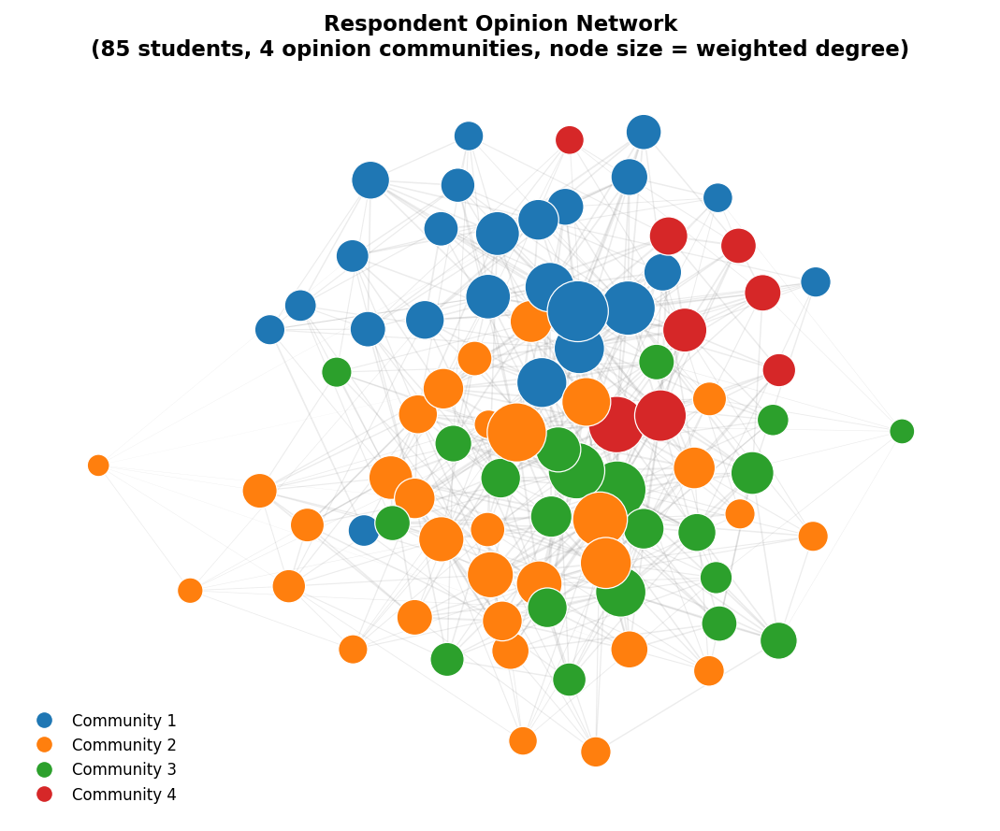
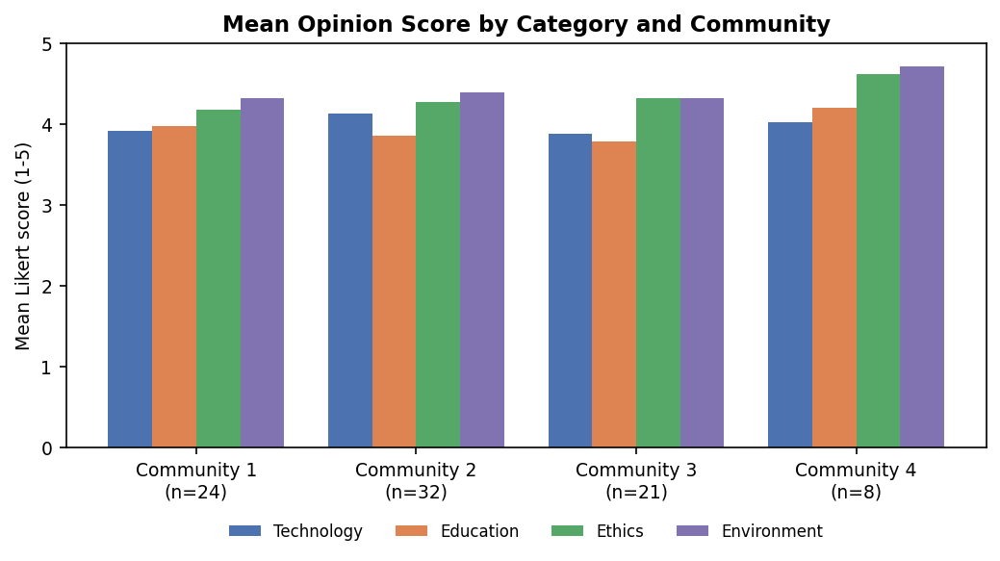
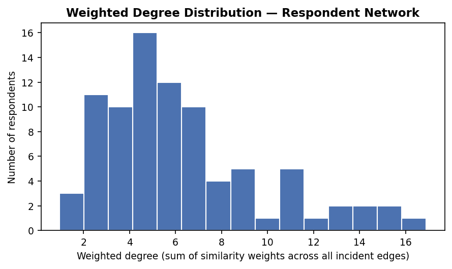
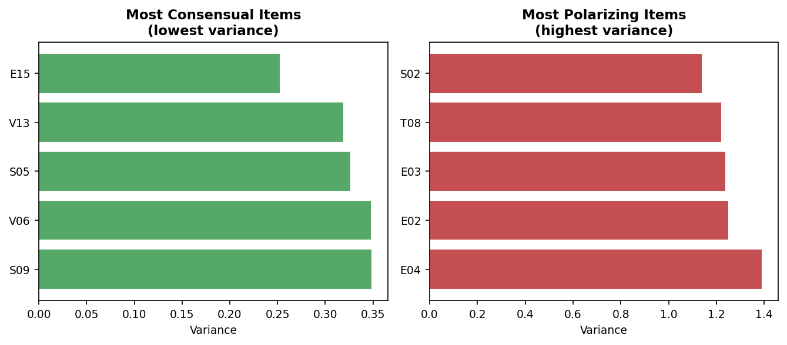
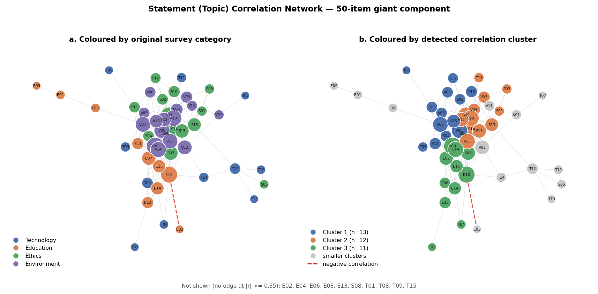
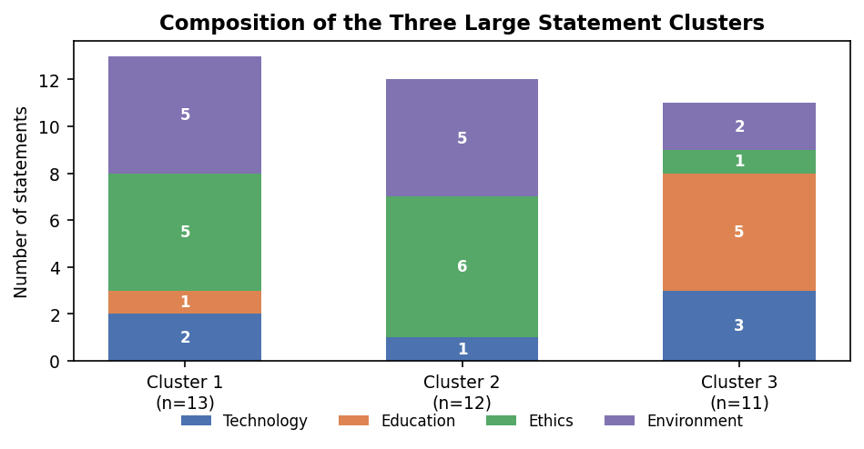

Team name: [INSERT TEAM NAME].
| Name | Roll Number |
|---|---|
| Vedant Pahariya | 2023112012 |
| Siddhant Gudwani | 2024102042 |
| Krishna Goel | 2023112009 |
Individual task ownership is documented in Section 7.
Repository: [INSERT GITHUB URL]. The repository holds the raw survey export, the full analysis pipeline, every generated figure and result table, and this report. It reproduces end-to-end from one command:
cd code && pip install pandas numpy networkx matplotlib && python main.py
Structure: data/ (raw survey CSV) · code/ (data_prep.py, build_networks.py, analyze_networks.py, visualize.py, sensitivity_analysis.py, validation.py, main.py) · figures/ (PNG) · output/ (CSV/JSON result tables) · report/. Every number quoted below is written to output/ by the pipeline, including the item-level community deviations used in Section 6.4 and the cluster memberships used in Section 5.4.
The dataset is the class's own opinion survey: four topic areas — Technology (T), Education (E), Ethics/Society (S), Environment (V) — with 15 five-point Likert statements each, 60 items in total. The raw export held 96 anonymised responses identified only by a numeric Response ID. No demographic fields were collected.
Likert categories were mapped to integers (Strongly Disagree = 1 … Strongly Agree = 5). Two kinds of non-answer were treated as missing: blank cells and the literal value “No Comments”.
Missingness was sharply bimodal. Of the 96 raw responses, 68 answered all 60 items and 17 missed between 1 and 4; separately, 6 respondents abandoned the survey partway (4 answered only the 15 Technology items, 2 left blocks of 10 and 15 items) and 5 submitted it entirely blank. Respondents missing more than 4 of 60 items were therefore excluded — the cutoff sits in the gap where the missingness distribution jumps from 4 straight to 10 — removing 11 respondents and leaving 85 retained (88.5%).
Within the retained sample, 37 cells (0.73% of the 85 × 60 = 5,100-cell matrix) were still missing and were filled with each item's column median, which is appropriate for ordinal data and avoids discarding an otherwise complete respondent over one unanswered statement.
Rather than assume this choice is harmless, sensitivity_analysis.py re-runs the pipeline under mode imputation and under a complete-case subset that imputes nothing at all (the 68 fully complete respondents). The aggregate results are unaffected: all four category means move by at most 0.05 of a Likert point across the three variants. The respondent partition, however, is not reproduced exactly — the adjusted Rand index against the reported partition is 0.47 for mode imputation and 0.14 for complete cases. That is a property of the clustering, not of the imputation: re-running Louvain on the unchanged baseline graph with ten different random seeds gives a mean pairwise ARI of only 0.60 (3–5 communities). The honest reading, carried through Sections 5 and 6, is that community count and community profiles are stable while individual memberships are not.
An 85 × 60 matrix of integers 1–5 (respondents × statements), 15 statements per category. The absence of demographic variables is a limitation revisited in Section 6.6.
Implemented in Python (pandas, numpy, networkx, matplotlib); runs end-to-end via code/main.py.
Step 1 — Load and clean (data_prep.py). Parse the CSV, encode responses to 1–5, drop the 11 low-completeness respondents, impute the remaining sparse gaps with the item median.
Step 2 — Respondent Opinion Network (build_networks.py). Nodes are the 85 respondents. For each pair we compute the Pearson correlation between their 60-item opinion vectors. Pearson was chosen over raw distance or cosine because it captures similarity in the pattern of relative agreement — which statements a respondent endorsed more or less strongly than their own average — while factoring out differences in overall agreeableness (some respondents reach for “Agree” more readily across the board). Each respondent is joined to their 8 most-similar peers, symmetrised by union: edge (i, j) exists if i is in j's top 8 or j is in i's top 8, so final degree can exceed 8. The union rule was chosen over the stricter mutual rule because at k = 8 a mutual k-NN graph fragments badly on this data — 131 edges across 17 disconnected components — and cannot support the connectivity-based analysis in Section 5, whereas the union graph is a single connected component with 549 edges.
Step 3 — Statement (Topic) Network (build_networks.py). Nodes are the 60 statements; two are joined when the Pearson correlation across the 85 respondents reaches |r| ≥ 0.35. This shows which statements are endorsed together in practice, independent of their a-priori T/E/S/V label.
Step 4 — Analyse (analyze_networks.py). Weighted degree, betweenness, eigenvector centrality and local clustering for every node. Weighted degree and eigenvector centrality read the edge weight as connection strength, which is correct for them. Betweenness does not: networkx interprets an edge weight as a distance when routing shortest paths, so using raw similarity would make weakly-similar pairs look closer. Betweenness is therefore computed on a distance-transformed copy, dij = 1 − wij. Communities come from Louvain (networkx implementation, fixed seed) — a greedy heuristic that approximately maximises modularity, with no guarantee of the global optimum and, as Section 3.2 shows, real seed-to-seed variation here. We also profile each community's mean score per topic and each item's deviation from the cohort mean (output/community_item_deltas.csv), and rank all 60 statements by response variance to identify consensus and polarisation.
Step 5 — Sensitivity, validation and visualisation (sensitivity_analysis.py, validation.py, visualize.py). Community detection is re-run across a range of k, across statement-network thresholds, across imputation strategies, across the union-vs-mutual choice, and across Louvain seeds, and the resulting community profiles are compared against the baseline (Section 6.6). Separately, validation.py split-half tests the statement clusters, runs a PCA on the item matrix, and checks whether centrality actually tracks proximity to the cohort's mean opinion (Sections 5.2 and 5.5). Force-directed layouts and the supporting charts are then drawn for both networks.
The network has 85 nodes and 549 edges (density 0.154), forms a single connected component, and has an average shortest path length of 2.04 — any two opinion profiles are reachable through roughly two intermediate peers. Average local clustering is 0.206: a respondent's similar peers are moderately likely to be similar to each other.

| Community | n | Technology | Education | Ethics | Environment | Overall |
|---|---|---|---|---|---|---|
| Community 1 | 24 | 3.92 | 3.98 | 4.18 | 4.33 | 4.10 |
| Community 2 | 32 | 4.13 | 3.86 | 4.28 | 4.40 | 4.17 |
| Community 3 | 21 | 3.88 | 3.79 | 4.33 | 4.33 | 4.08 |
| Community 4 | 8 | 4.03 | 4.21 | 4.62 | 4.72 | 4.39 |

Table 2 lists the five most and five least central respondents by weighted degree — those whose opinion profile is most, and least, shared with the rest of the cohort.
| Response ID | Weighted degree | Betweenness | Eigenvector | Interpretation |
|---|---|---|---|---|
| 104 | 16.90 | 0.083 | 0.271 | Most central by degree — mainstream opinion profile |
| 114 | 15.84 | 0.113 | 0.235 | Highest betweenness in the network |
| 49 | 14.94 | 0.071 | 0.237 | Highly central |
| 81 | 14.32 | 0.041 | 0.246 | Highly central |
| 61 | 14.30 | 0.053 | 0.229 | Highly central |
| 40 | 2.59 | 0.002 | 0.019 | Peripheral — atypical profile |
| 101 | 2.57 | 0.0003 | 0.033 | Peripheral |
| 125 | 1.76 | 0.000 | 0.017 | Peripheral |
| 120 | 1.64 | 0.001 | 0.012 | Peripheral |
| 119 | 0.95 | 0.000 | 0.006 | Most peripheral, near-zero betweenness |
output/respondent_centrality.csv.Weighted degree measures connectivity in a similarity graph, which is not the same thing as holding a mainstream opinion, so we tested the link rather than assuming it (validation.py). Correlating each respondent's centrality with their proximity to the cohort centroid — the mean 60-item opinion profile — gives r = 0.83 for weighted degree and 0.82 for eigenvector centrality against correlation-to-centroid, and −0.45 for both against Euclidean distance to it. Degree does track mainstream-ness, and it tracks it on the correlation metric the network is built from; the weaker Euclidean figure reflects that distance also absorbs scale-use extremity, which Pearson deliberately factors out. Betweenness is the loosest of the three (r = 0.62), as expected for a path-based measure.
Across all 85 respondents the three measures also agree closely with each other: degree correlates with betweenness at r = 0.89 and with eigenvector centrality at r = 0.97. The respondents most similar to the cohort also sit on the most shortest paths and are the ones connected to other well-connected peers; the most idiosyncratic sit on almost none. The eigenvector figures sharpen this — respondent 119's 0.006 against 104's 0.271 is a two-order-of-magnitude gap, far wider than the degree ratio, because peripheral respondents are not merely sparsely connected but connected to other sparsely-connected nodes. Section 6.5 takes up what this means.

Across all 60 statements, 80.3% of responses were “Agree” or “Strongly Agree” against only 7.0% “Disagree” or “Strongly Disagree”. The cohort is broadly agreeable — but not uniformly so.

The most consensual statements span Education, Environment and Ethics: continuous learning and skill development throughout a career (E15, mean 4.72), corporate accountability for environmental impact (V13, 4.67), personal control over one's data (S05, 4.65). The most polarising are concentrated in Education, which supplies three of the top five: whether class attendance should be compulsory (E03, mean 2.02 — the most disagreed-with statement in the survey), whether traditional written exams accurately measure knowledge (E02, 2.81), and whether online learning can effectively complement classroom teaching (E04, 3.42, the highest-variance item overall). The other two are community service (S02, 3.84) and routine AI-assisted medical diagnosis (T08, 3.08).
The Statement Network has 60 nodes and 169 edges (density 0.096) across 11 components: a 50-item giant component plus 10 statements that correlate with nothing else at the threshold. Louvain finds 17 communities (modularity 0.306), most of them those singletons; three, however, are substantial — 13, 12 and 11 items — and cut across the survey's own T/E/S/V labelling.


output/statement_clusters.csv.168 of the 169 edges are positive. The single negative edge (E03 “attendance should be compulsory” vs. E10 “prioritise innovation over rote learning”, r = −0.43) is retained with its sign stored as an edge attribute, but Louvain modularity as implemented here is not a signed-network method; with one negative edge the effect on the partition is negligible, though a lower threshold admitting more negative edges would require proper signed modularity (e.g. Gómez et al., 2009).
No independent sample exists, so validation.py substitutes a split-half test: the 85 respondents are split at random 50 times, the statement network is rebuilt independently on each half, and the full-sample clusters are matched to their best counterpart in each half. The result splits cleanly into two claims.
The specific membership does not replicate. Mean Jaccard overlap is 0.30, 0.36 and 0.40 for Clusters 1–3 — a half sample recovers roughly a third of a given cluster's items. Some of this is statistical power (each half estimates correlations from about 42 respondents) rather than pure artefact, but the conclusion stands: the exact item lists above are not a stable object.
The cross-cutting pattern replicates strongly. Of 120 large clusters recovered across half samples, 117 (97.5%) still mix two or more survey categories, and the dominant category accounts for an average of only 47% of a cluster's items. Independently of clustering altogether, item pairs inside the same detected cluster correlate at mean |r| = 0.303 against 0.228 for pairs inside the same T/E/S/V category and 0.176 for all pairs — the detected clusters group co-answered items better than the survey's own labels do.
A PCA on the standardised 60-item matrix does not add support for a clean latent structure. PC1 takes 19.8% of variance with 95% of its loadings sharing a sign, making it a general agreement factor consistent with the ceiling effect rather than a topical dimension; the scree after it is flat (5.6%, 5.0%, 4.6%, 4.6%), so no confirmatory factor structure is identifiable at n = 85.
Taken together: the cohort's opinions are organised around something that cuts across the survey's subject labels, and the thematic readings offered above — institutional accountability, personal environmental responsibility, enthusiasm for AI-driven modernisation of education — remain exploratory descriptions of one sample's clusters rather than validated dimensions.
With 80.3% of the 5,100 retained responses at “Agree” or “Strongly Agree”, opinion skews strongly positive across all four topics. This has a direct methodological consequence: when almost everyone agrees with almost everything, little variance remains for statements to correlate on. That is the main reason the Statement Network is comparatively sparse and fragmented — a restriction-of-range problem, not evidence that the 10 isolated items are conceptually unrelated to the rest of the survey.
Environment has the highest mean (4.39) and the lowest standard deviation (0.75) of the four categories. In Table 1 it is the top-scoring category in three of the four communities and exactly ties Ethics in the fourth (Community 3, both 4.327), so the precise claim is highest-or-joint-highest in every community, including Community 4.
Because memberships shift between runs, we checked this across settings rather than reading it off one partition. Over 43 community-by-setting combinations (k = 6–10, three imputation schemes, several Louvain seeds), Environment is the top category in 31 and Ethics in the remaining 12, with Ethics never exceeding Environment by more than 0.17. In 40 of the 43, both Ethics and Environment outrank both Technology and Education. Environmental concern — paired closely with ethical concern — is a genuine class-wide value rather than the property of one faction, though Environment's specific first place over Ethics is narrower than Table 1 alone suggests.
Education has the lowest mean (3.91) and the highest standard deviation (1.16), and supplies three of the five most polarising statements. The cohort leans against compulsory attendance (2.02) and against traditional exams as accurate measures of knowledge (2.81), and splits almost evenly on online learning (3.42). Crucially this is a pedagogical disagreement, not a topical one: the class is near-unanimous that continuous learning matters (E15, 4.72, the single most consensual item) and divided only on how learning should be delivered and assessed.
All four communities lean toward agreement in every category — there is no anti-technology or anti-environment faction. What separates them is relative emphasis, quantified per item in output/community_item_deltas.csv:
Because the network was built on Pearson correlation, which factors out each respondent's overall agreeableness, these reflect genuine differences in relative priority rather than some students being generically more positive. Two cautions apply. Community 4's n = 8 makes its means the least robust of the four. More importantly, Section 3.2 showed that individual memberships shift under reruns (mean pairwise ARI 0.60 across Louvain seeds), so these profiles should be read as recurring opinion tendencies in the cohort rather than as a fixed roster of who belongs where. The profiles themselves survive that instability: matching each run's communities to the baseline by maximum respondent overlap across ten settings, category means drift by 0.12 on average and 0.56 at worst, and every community in every setting scores above 3.5 on all four categories — the “no faction is against anything” finding is the most robust result in this report.
A natural hypothesis in opinion networks is that centrality splits into two roles: well-connected mainstream respondents, and low-degree “bridge” respondents who hold minority views but structurally connect otherwise-separate groups. That does not hold here, once betweenness is computed with similarity properly converted to distance. Respondent 104 has the highest weighted degree and 114 the highest betweenness — both are highly-connected mainstream respondents. Every respondent in the bottom five by degree has betweenness at or near zero and eigenvector centrality below 0.034. With degree–betweenness r = 0.89 and degree–eigenvector r = 0.97, the three measures tell one story: the most idiosyncratic respondents are simply weakly attached to the network, not bridging distinct camps. We read this cautiously: no dedicated core–periphery test (e.g. Borgatti & Everett) was run, so the defensible claim is a dense central group with a peripheral fringe, and no evidence in these centrality measures of a distinct low-degree bridging role.
This assignment is graded individually on documented contribution. The three workstreams below are of comparable scope: each covers roughly one third of the code in code/, one third of the generated artefacts in figures/ and output/, and a corresponding share of this report.
| Team Member | Main Tasks | % Contribution |
|---|---|---|
| Vedant Pahariya | Data pipeline and Respondent Opinion Network. Survey parsing and Likert encoding, missingness profiling and the completeness cutoff, median imputation (data_prep.py); respondent similarity matrix and the union k-NN construction, including the union-vs-mutual comparison that justified it (build_networks.py); network-level metrics — density, components, path length, clustering. Report Sections 3 and 4 (Steps 1–2), 5.1. |
33% |
| Siddhant Gudwani | Statement Network, centrality and community analysis. Item–item correlation network and threshold selection (build_networks.py); weighted degree, betweenness on the distance-transformed graph, eigenvector centrality and clustering; Louvain community detection on both networks; community opinion profiling, per-item community deviations, statement cluster tables and the consensus/polarisation ranking (analyze_networks.py). Report Sections 4 (Steps 3–4), 5.2–5.4, 6.1–6.5. |
34% |
| Krishna Goel | Robustness, validation and visualisation. Sensitivity analysis across k, correlation threshold, imputation strategy, Louvain seeds and community-profile drift (sensitivity_analysis.py); split-half cluster replication, within-group correlation comparison, PCA and the centrality-vs-centroid test (validation.py); all six figures (visualize.py); pipeline orchestration and result export (main.py); repository documentation. Report Sections 4 (Step 5), 5.5, 6.6. |
33% |
Each member reviewed the sections written by the other two; the report text was drafted jointly against the outputs listed above.